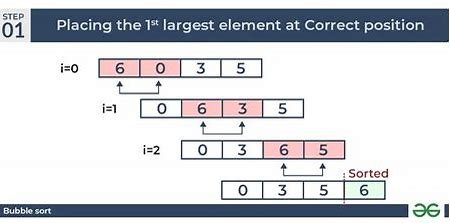

Bubble Sort is a simple sorting algorithm that repeatedly steps through the list, compares adjacent elements and swaps them if they are in the wrong order. The pass through the list is repeated until the list is sorted. The algorithm gets its name from the way smaller elements "bubble" to the top of the list.
Insertion Sort is a simple sorting algorithm that builds the final sorted array one item at a time. It is much less efficient on large lists than more advanced algorithms such as quicksort, heapsort, or merge sort. However, insertion sort provides several advantages:
Merge Sort is an efficient, stable, comparison-based, divide and conquer sorting algorithm. Most implementations produce a stable sort, which means that the implementation preserves the input order of equal elements in the sorted output. Merge Sort is a divide and conquer algorithm that was invented by John von Neumann in 1945.
Selection Sort is a simple and inefficient sorting algorithm. It works by dividing the input list into two parts: the sublist of items already sorted, which is built up from left to right at the front (left) of the list, and the sublist of items remaining to be sorted that occupy the rest of the list. Initially, the sorted sublist is empty and the unsorted sublist is the entire input list. The algorithm proceeds by finding the smallest (or largest, depending on sorting order) element in the unsorted sublist, exchanging (swapping) it with the leftmost unsorted element (putting it in sorted order), and moving the sublist boundaries one element to the right.
Radix Sort is a non-comparative sorting algorithm. It avoids comparison by creating and distributing elements into buckets according to their radix. For elements with more than one significant digit, this bucketing process is repeated for each digit, while preserving the ordering of the prior step, until all digits have been considered. For this reason, radix sort has also been called bucket sort and digital sort.
Quick Sort is an efficient, in-place, comparison-based, divide and conquer sorting algorithm. Developed by Tony Hoare in 1959, it is still a commonly used algorithm for sorting. When implemented well, it can be about two or three times faster than its main competitors, merge sort and heapsort.
Tree Sort is a sorting algorithm that builds a binary search tree from the elements to be sorted, and then traverses the tree (in-order traversal) so that the elements come out in sorted order. The worst-case time complexity of Tree Sort is O(n^2), but it is O(n log n) on average.
Bogo Sort is a highly ineffective sorting algorithm based on the generate and test paradigm. The algorithm successively generates permutations of its input until it finds one that is sorted. It is not suitable for practical use, but it is used as an educational tool to contrast with more efficient algorithms.
Slow Sort is a sorting algorithm introduced by Andrei Broder and Jorge Stolfi in 1986. It is of humorous nature and is not intended for practical use. It is a recursive algorithm that combines the principles of insertion sort and merge sort.